WOOD WEAVE
Addressing urban waste streams in Bursa's historical market district. Repurposing discarded wooden produce crates and surplus fruit waste through interlocking 2-meter standardized timber beams into a covered market arcade and community craft workshop. “When does waste become a place?”
Individual project. Modular timber joinery design, material waste harvesting logistics, parametric structural weaving, 1/100 drawings, and isometric physical testing.
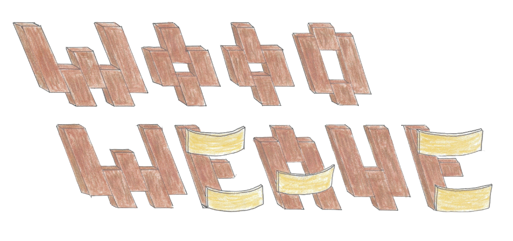
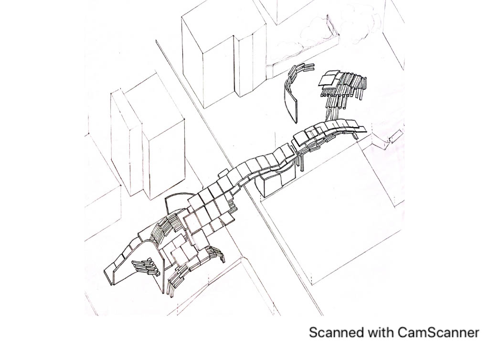
2-Meter Interlocking Logic
The entire structure is assembled from standardized wooden pieces, each two meters in length, interlocking without irreversible wet joints to generate flexible, evolving interstitial spaces.
Repurposing Market Waste
Located next to Bursa’s bustling open-air market, the project transforms discarded wooden produce crates, surplus organic fruits, and vegetable waste into generative building and craft media.
Personalization by Inhabitants
Rather than an inflexible monument, the pavilion acts as an open scaffold. Local tradespeople and learners adapt their individual zones to exhibit, dry, and sell their upcycled creations.
The structure is formed by interlocking wooden pieces, each two meters in length, creating generative spatial intervals between them. This design allows users to establish an open communal environment where individuals can showcase and display their creations, while offering the people who frequent the bazaar the opportunity to personalize their own territories within the space.
The educational and production hub is situated directly beside the traditional market in Bursa. Here, participants learn how to recycle and upcycle by collecting discarded packaging and surplus fruits from the bazaar area and surrounding alleys, discovering practical ways to live collectively with less waste.
Students attend classes every day except Wednesdays (the weekly market day) and weekends. Every Thursday morning, they gather the bazaar’s leftover waste and surplus produce, learning through hands-on experience how to repurpose materials throughout the week. This ritual keeps their neighborhood clean while teaching how to turn discarded matter into valuable new creations, gaining deep insight into material properties and structural behaviors.
Yapı, her biri iki metre uzunluğunda birbirine kenetlenen ahşap parçalardan meydana gelmekte ve aralarında dinamik mekânsal boşluklar üretmektedir. Bu kurgu, kullanıcıların kendi üretimlerini sergileyebilecekleri ortak bir zemin sağlarken, pazar alanını kullanan yerel halk ve esnafa da mekân içinde kendi kişiselleştirilmiş alanlarını kurma özgürlüğü tanır.
Eğitim ve üretim merkezi Bursa'daki tarihi pazar alanının hemen bitişiğinde yer almaktadır. Burada öğrenciler ve mahalle sakinleri, pazar tezgahlarından ve çevre sokaklardan toplanan ahşap kasaları, atık sebze ve meyveleri ileri dönüştürerek (upcycling) daha az atıkla kolektif bir yaşam kurmanın yollarını keşfederler.
Öğrenciler Çarşamba (pazarın kurulduğu gün) ve hafta sonları hariç her gün atölye çalışmalarına katılır. Her Perşembe sabahı pazarın ardından kalan atık ve fazlalıklar toplanır; hafta boyunca dikiş, kurutma, ahşap yontu ve biçimlendirme teknikleriyle yeni mekân ve kullanım nesnelerine dönüştürülür. Bu döngü hem sokakları temiz tutar hem de malzemelerin fiziksel özelliklerini yaparak yaşayarak öğrenmeyi sağlar.
"Waste is not an end point; it is the raw seed of our next civic space."
Weekly Bursa Bazaar Day
The traditional marketplace pulses with commercial exchange, producing piles of surplus timber fruit crates, cardboard, and edible surplus.
Waste Gathering & Material Sorting
Students and local participants systematically harvest discarded fruit crates, botanicals, and textiles from the emptying market square.
Experimental Upcycling Workshops
Wood joinery, textile sewing, botanical drying, and sculpting sessions turn refuse into craft artifacts, furniture elements, and hanging goods.
Suspension & Civic Exhibition
Finished objects and dried botanicals are hung directly from the 2-meter overhead timber ceiling beams, turning the covered passage into a living gallery.
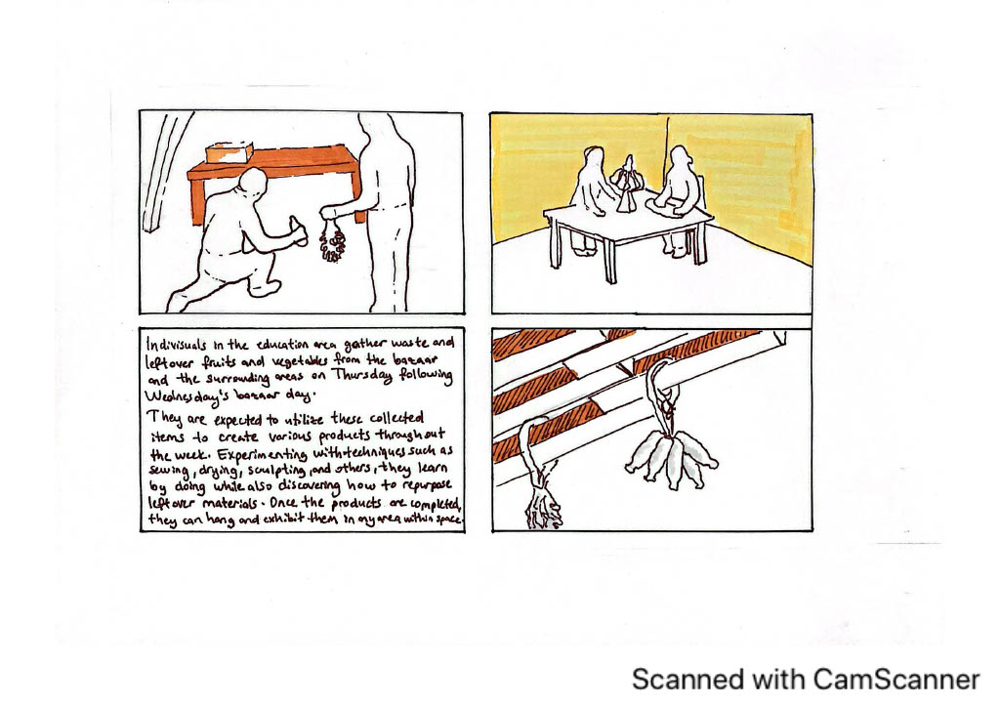
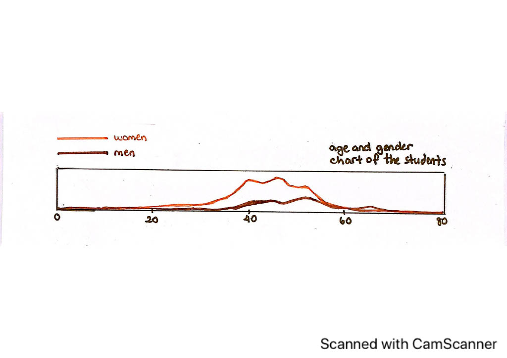
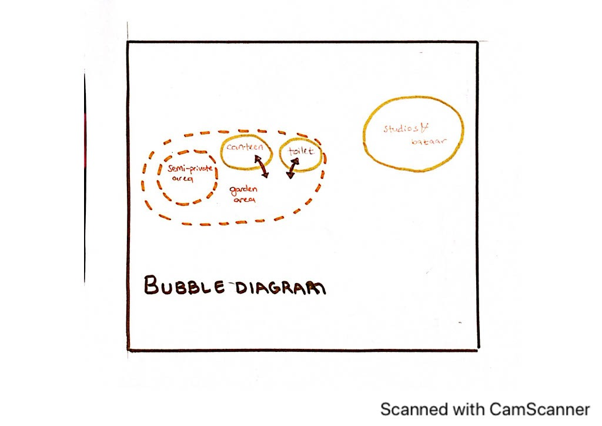
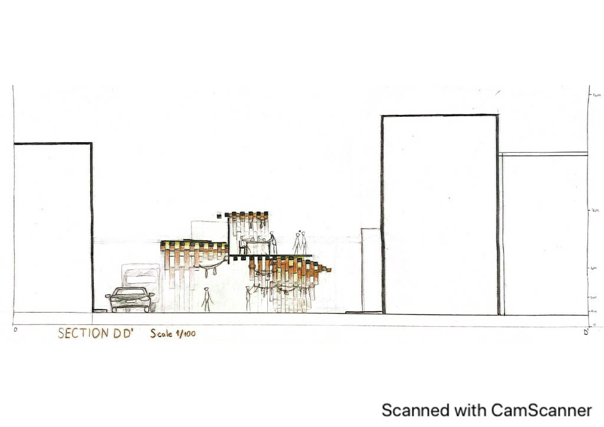
Modular 2-Meter Timber Units
Standardized interlocking timber lengths minimize off-cuts and simplify repetitive assembly. They form both load-bearing uprights and overhead hanging ribs.
Stepped Hanging Ceiling Envelope
As seen in Section DD', ceiling beams descend at graduated vertical heights, creating tactile hanging zones for dried herbs, fruits, and handcrafted artifacts above passersby.
Diurnal Solar & Wind Modulation
Calibrated against the Bursa sun trajectory (Section B-B'), the slatted wooden lattice blocks harsh midday heat while allowing natural breezes and soft indirect daylight to penetrate workshop desks.
Urban Alley Permeability
Instead of an impenetrable building volume, the structure behaves like a breathable urban canopy, welcoming pedestrians wandering between the bazaar and surrounding residential lanes.
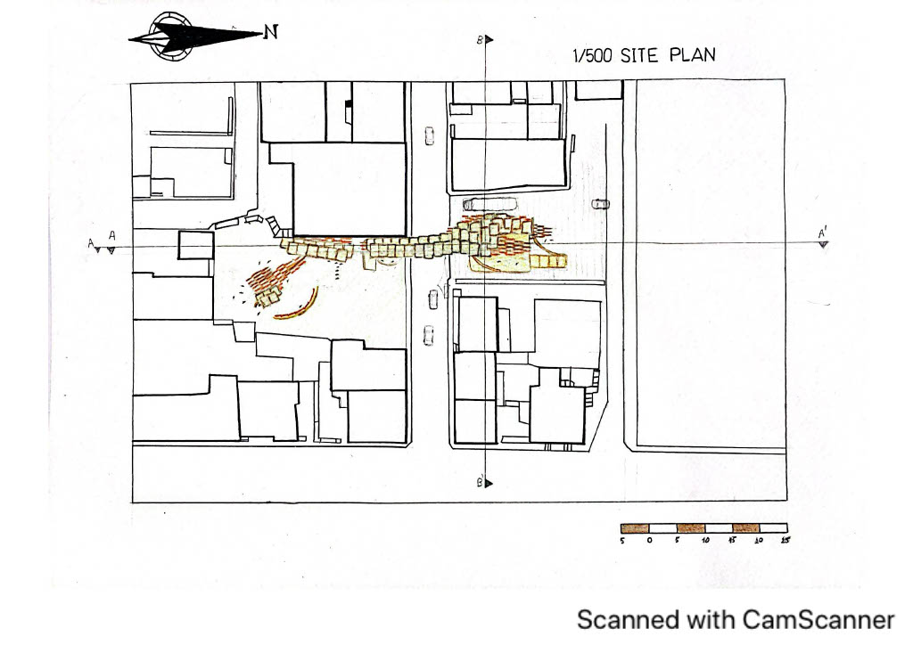
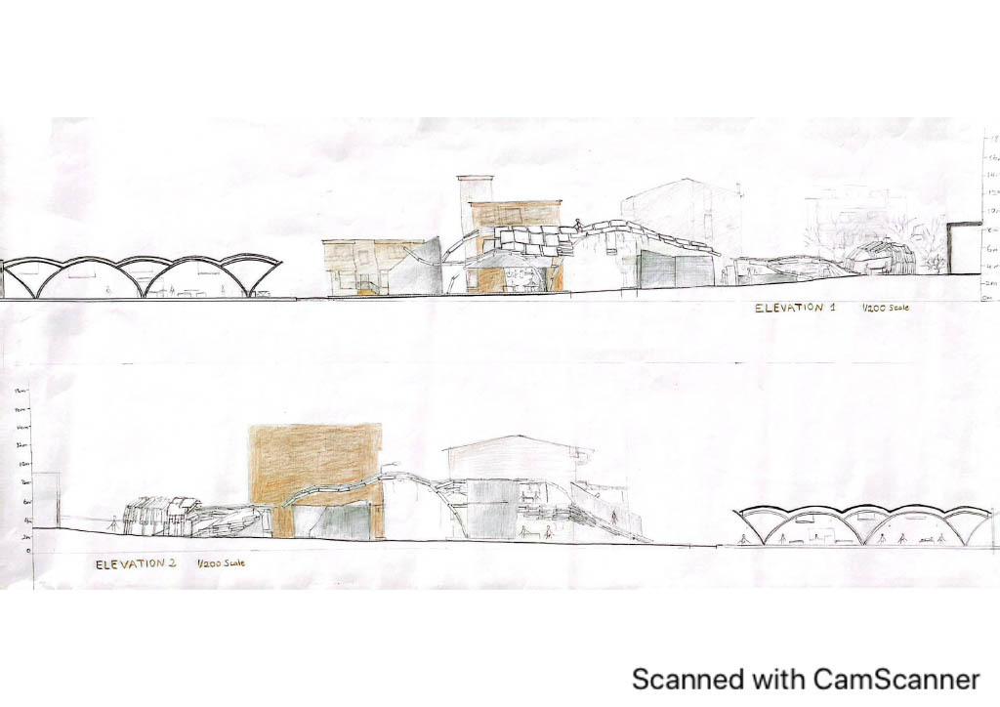
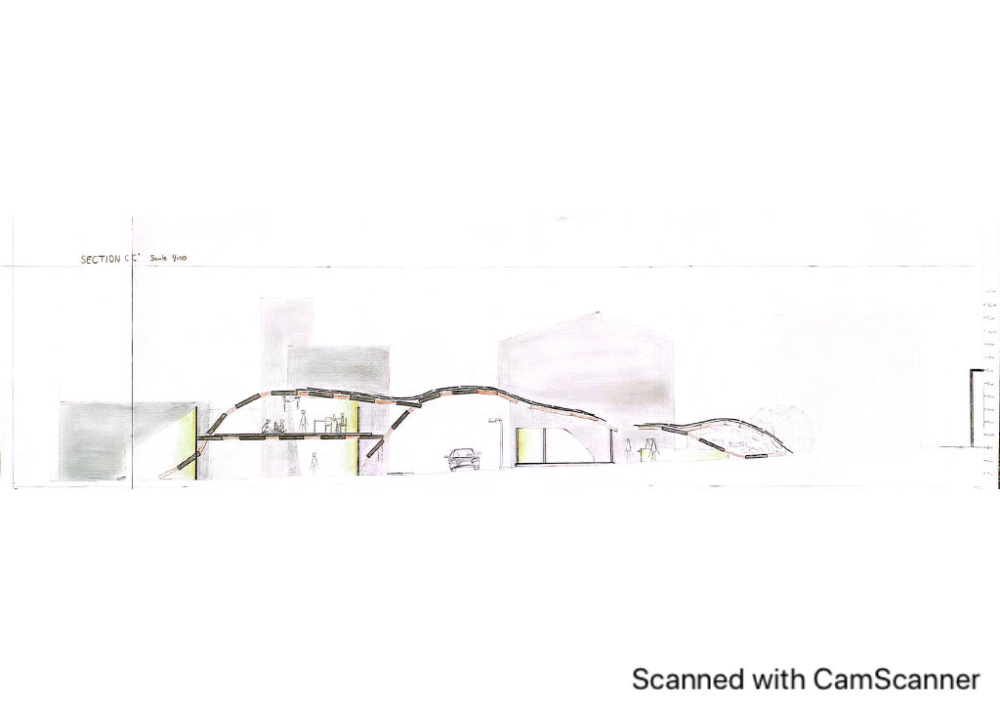
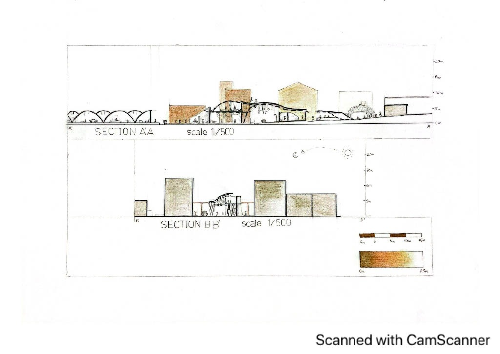
High-resolution exhibition boards presented for review. Click either sheet to view the full presentation panels in high detail.
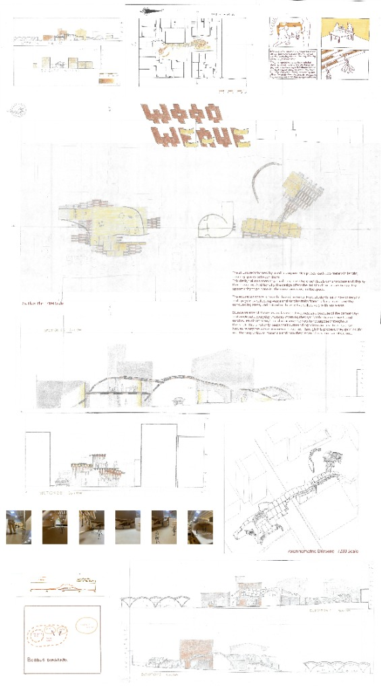
SHEET 01 • FULL COMPILATIONSHEET 01 — COMPLETE JURY BOARD
Comprehensive layout with 1/500 site plan, 1/100 plans & sections, process storyboard, and physical model photos.
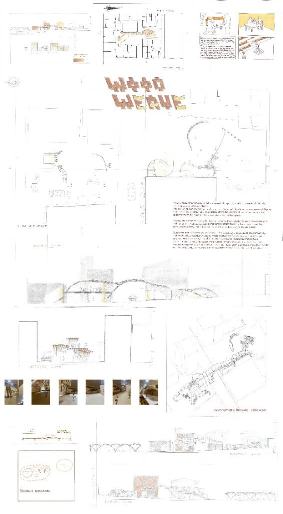
SHEET 02 • TECHNICAL PLANSSHEET 02 — TECHNICAL DETAIL SHEET
Detailed floor plans, structural interlocking joinery diagrams, and circulation connections.
ULTRA HIGH-RESOLUTION ARCHIVE
Access the master 9,933 × 18,000 px original presentation posters directly from the project archive.